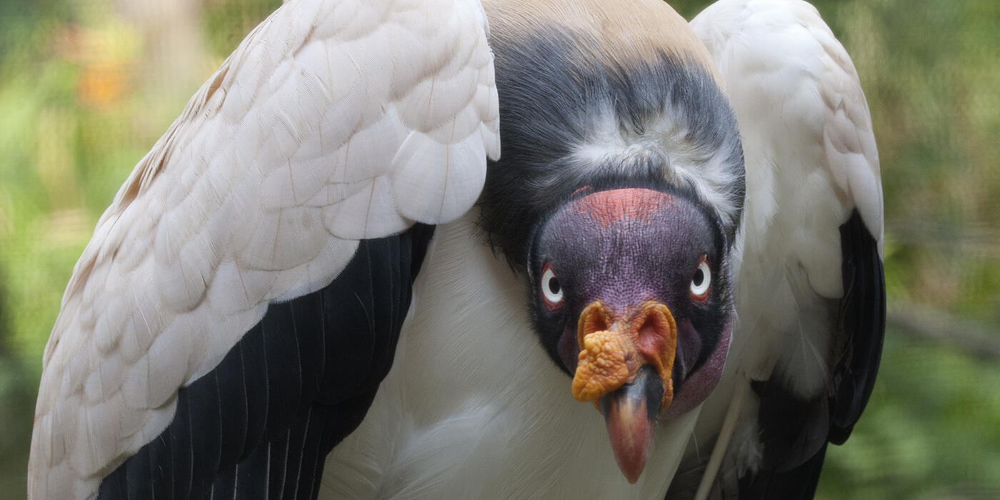
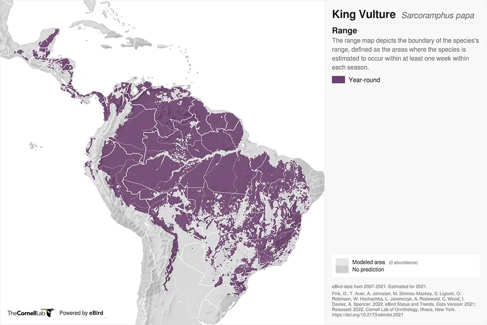
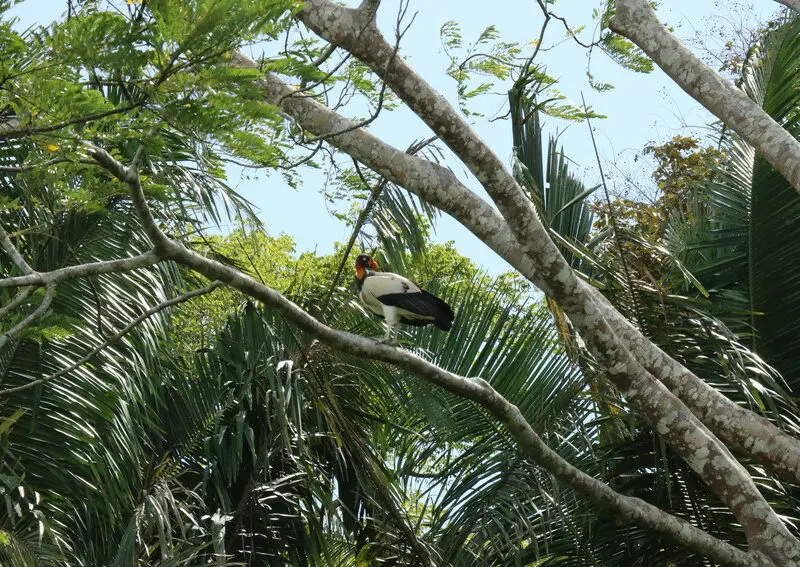

| Common Name | King Vulture |
|---|---|
| Conservation Status | Least Concern |
| Kingdom | Animalia |
| Phylum | Chordata |
| Subphylum | Vertebrata |
| Class | Aves |
| Subclass | Neornithes |
| Order | Cathartiformes |
| Suborder | N/A |
| Family | Cathartidae |
| Genus | King Vulture |
| Species | Bitis gabonica [1], [2], [3] |
-
Physical Profile
-
Size Ranges
- Body length ranges from 27 – 32 inches
- expansive wingspan of 4 – 6.5 ft
- They weigh between 6 – 10 lbs [4], [5], [6],
-
Identification Markings
Striking, predominantly creamy-white body plumage with a thick, dark gray-to-black neck ruff, tail, and flight feathers. The head and neck are completely bald, featuring vividly wrinkled skin colored in bright orange, red, yellow, and purplish-blue. Notable for an irregular, fleshy golden wattle (caruncle) resting on top of its heavy, curved orange beak. [2], [7], [8]
-
Habitat & Geography
-
Habitat
Undisturbed lowland tropical rainforests, as well as nearby open savannas and wet grasslands.
-
Distribution
Ranges extensively from Southern Mexico down through Central America to Northern Argentina. [5], [6], [9], [10]
-

Source: Avian Report 
Source: World Land Trust
-
Ecology & Behavior
-
Diet
Strict carnivore/scavenger, feeds entirely on dead animal carcasseses -
Behavior
Possesses a massive skull and exceptionally strong, hooked beak capable of ripping through the toughest hides of large carcasses. Because of this strength, other smaller vultures rely on the King Vulture to break open a fresh carcass. Their bald head is a behavioral adaptation keeping bacteria-laden flesh from sticking to feathers. Highly corrosive stomach acids neutralize severe pathogens like anthrax and rabies. Uses urohidrosis (defecating on its own legs) to cool down its body temperature.
-
Communication
Lacks a syrinx (voice box). Communication is minimal and restricted to low croaks, gutteral wheezing during courtship, or sharp bill-snapping when defending space.
-
Life History Cycle & Breeding Behaviors
Forms monogamous pairings. Females lay a single, creamy-white egg directly on the ground or inside hollow tree stumps. Both parents cooperatively incubate the egg for 53 to 58 days. Chicks take up to 4 – 5 years to shed their dark juvenile feathers and attain full adult coloration. Can live 30 to 40+ years in captivity.
-
Predators
- Jaguars
- Pumas [4], [5], [6], [7] [8], [10], [11], [12]